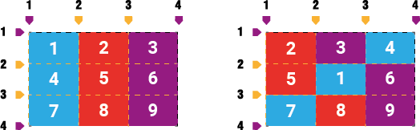

De momento en la construcción de grillas no modificamos la estructura tal como se construye por medio de las propiedades
que fuimos analizando. La generación de grillas implícitas facilitan la estructuración, pero a veces la estructura puede
necesitar alterarse a raíz de un Responsive Layout para acomodarse a una resolución u otro motivo. Para ello
puede ser práctico mover una celda, grid-column-start - grid-column-end y
grid-row-start - grid-row-end; estos dos juegos de propiedades permiten mover las celdas a través
de las líneas de la grilla.
Por ejemplo queremos mover la celda 1 entre las líneas 2 y 3 horizontalmente y verticalmente.
Sí solo definimos grid-column-start, la celda empujará a las siguientes creando nuevas y también dejará su lugar como una celda vacía.

Ha ocurrido algún problema con la señal de internet. Expandir celdas. desarrollado por Nicolas Kolumbic (@NicolasKolumbic) en CodePen .
El potencial de expandir celdas permitirá crear estructuras complejas. Es importante conocer que las mencionadas líneas tienen un valor positivo y otro negativo, de hecho, los navegadores lo muestran (Imagen 1 y 2) en la pestaña de Diseño(Layout). Para expandir celdas utilizamos las mismas propiedades pero en vez de definir el final en la siguiente línea lo hacemos tanto como queremos que se expanda la celda horizontalmente o verticalmente en cada propiedad.
Chrome (Imagen 1)

Firefox (Imagen 2)

grid-column-start, grid-column-end, grid-row-start y
grid-row-end tienen dos propiedades abreviadas: grid-column y grid-row que simplifican la declaración de mover y extender celdas. Además
estás dos también pueden ser simplificadas en grid-area. Está última propiedad abreviada es más potente que lo descrito en este apartado, será tratado en breve.
Ha ocurrido algún problema con la señal de internet. Apilamiento de celdas. desarrollado por Nicolas Kolumbic (@NicolasKolumbic) en CodePen .
Otra manera de expandir las celdas en todas las propiedades vistas (grid-column-start, grid-column-end,
grid-row-start, grid-row-end, grid-column, grid-row y grid-area ) es la que brinda la clave span, tiene una función similar a los
atributos colspan y rowspan de la etiqueta <td> de <table>, espera como valor
cuántas celdas en adelante se va expandir.
Ha ocurrido algún problema con la señal de internet. La clave span. desarrollado por Nicolas Kolumbic (@NicolasKolumbic) en CodePen .
Tener en cuenta que las celdas tienen orden de apilamiento y si movemos dos celdas en el mismo lugar, la que esté declarada en el HTML por detrás de la primera será la que se visualice por delante.
Ha ocurrido algún problema con la señal de internet. Apilamiento de celdas. desarrollado por Nicolas Kolumbic (@NicolasKolumbic) en CodePen .
PODRIA HACER UN GRAFICO PARECIDO PARA QUE QUEDE MAS VISUAL (PARECIDO A LA PAGINA 38(30))
Aquí, estamos usando números de líneas de cuadrícula para decir dónde y cómo deben
colocarse los elementos dentro de la cuadrícula. Los números de columna cuentan de izquierda
a derecha y los números de fila de arriba a abajo. Tenga en cuenta que si omite las líneas de
cuadrícula finales, como fue el caso de ".tres", las siguientes líneas de cuadrícula en secuencia se
utilizan para las líneas finales.
Si proporciona un intervalo con un número, está diciendo, "extienda a través de esta cantidad de
celdas de cuadrícula". Así que podríamos reescribir nuestro ejemplo anterior de esta manera y
obtener exactamente el mismo resultado:
#grid {display: grid;
grid-template-rows: repeat(5, 5em);
grid-template-columns: repeat(10, 5em);}
.one {
grid-row-start: 2; grid-row-end: span 2;
grid-column-start: 2; grid-column-end: span 2;}
.two {
grid-row-start: 1; grid-row-end: span 2;
grid-column-start: 5; grid-column-end: span 5;}
.three {
grid-row-start: 4; grid-row-end: span 1;
grid-column-start: 6; grid-column-end: span;}
Si omite un número para el intervalo, se establece en 1. No puede usar números cero
o negativos para el intervalo; solo números enteros positivos.
Una característica interesante de span es que puede usarlo tanto para líneas de
cuadrícula iniciales como finales. El comportamiento preciso de span es que cuenta
las líneas de cuadrícula en la dirección "lejos" de la línea de cuadrícula donde
comienza. En otras palabras, si define una línea de cuadrícula inicial y configura la
línea de cuadrícula final como un valor de intervalo, buscará hacia el final de la
cuadrícula. Por el contrario, si define una línea de cuadrícula final y convierte la línea
de inicio en un valor de intervalo, buscará hacia el inicio de la cuadrícula
No estamos restringidos a números de líneas de cuadrícula, como sucede. Si hay líneas de
cuadrícula con nombre, podemos referirnos a ellas en lugar de (o junto con) números. Si tiene
varias instancias de un nombre de línea de cuadrícula, puede usar números para identificar de
qué instancia del nombre de línea de cuadrícula está hablando. Por lo tanto, para comenzar
desde la cuarta instancia de una cuadrícula de fila denominada "mast-slice", puede decir "mastslice" 4. Eche un vistazo a lo siguiente, ilustrado en la Figura 30, para tener una idea de cómo
funciona.
#grid {display: grid;
grid-template-rows: repeat(5, [R] 4em);
grid-template-columns: 2em repeat(5, [col-A] 5em [col-B] 5em) 2em;}
.one {
grid-row-start: R 2; grid-row-end: 5;
grid-column-start: col-B; grid-column-end: span 2;}
.two {
grid-row-start: R; grid-row-end: span R 2;
grid-column-start: col-A 3; grid-column-end: span 2 col-A;}
.three {
grid-row-start: 9;
grid-column-start: col-A -2;}
EJEMPLO DE LA PAGINA 41(33) NO SE ENTIENDE, PROBARLO CON CODIGO.
Adjuntar elementos a líneas de cuadrícula con nombre
MIRAR EJEMPLO DE LA PAG 42 (34) "Otra forma de adjuntar elementos a líneas de cuadrícula con nombre"
Hay una forma alternativa de usar nombres con líneas de cuadrícula con nombre,
específicamente, las líneas de cuadrícula con nombre que se crean implícitamente por
áreas de cuadrícula. Por ejemplo, considere los siguientes estilos, ilustrados en la Figura
31:
grid-template-areas:
"header header header header"
"leftside content content rightside"
"leftside footer footer footer";
#masthead {grid-row-start: header;
grid-column-start: header; grid-row-end: header;}
#sidebar {grid-row-start: 2; grid-row-end: 4;
grid-column-start: leftside / span 1;}
Attaching Elements to the Grid | 33
#main {grid-row-start: content; grid-row-end: content;
grid-column-start: content;}
#navbar {grid-row-start: rightside; grd-row-end: 3;
grid-column-start: rightside;}
#footer {grid-row-start: 3; grid-row-end: span 1;
grid-column-start: footer; grid-row-end: footer;}
La posibilidad del valor final, auto, es bastante interesante. De acuerdo con la
especificación de diseño de cuadrícula, si una de las propiedades de inicio/fin de la línea
de cuadrícula se establece en automático, eso indica "ubicación automática, un intervalo
automático o un intervalo predeterminado de uno". En la práctica, lo que esto tiende a
significar es que la línea de la cuadrícula que se selecciona está gobernada por el "flo de la
cuadrícula", un concepto que aún tenemos que cubrir (¡pero lo haremos pronto!). Para
una línea de inicio, auto generalmente significa que se usará la siguiente línea de columna
o fila disponible. Para una línea final, auto generalmente significa un lapso de una celda.
En ambos casos, la palabra "generalmente" se usa intencionalmente: como con cualquier
mecanismo automático, no hay absolutos
PAGINA 44 (83)
#grid {display: grid;
grid-template-rows: repeat(10, [R] 1.5em);
grid-template-columns: 2em repeat(5, [col-A] 5em [col-B] 5em) 2em;}
.one {
grid-row: R 3 / 7;
grid-column: col-B / span 2;}
.two {
grid-row: R / span R 2;
grid-column: col-A 3 / span 2 col-A;}
.three {
grid-row: 9;
grid-column: col-A -2;}
Eso es mucho más fácil de leer que tener cada valor inicial y final en su propia propiedad,
sinceramente. Además de ser más compacto, el comportamiento de estas propiedades es
más o menos lo que cabría esperar. Si tiene dos bits separados por un solidus, la primera
parte define la línea de cuadrícula inicial y la segunda parte define la línea de cuadrícula
final.
#grid {display: grid;
grid-template-areas:
"header header"
"sidebar content"
"footer footer";
grid-template-rows: auto 1fr auto;
grid-template-columns: 25% 75%;}
#header {grid-row: header / header; grid-column: header;}
#footer {grid-row: footer; grid-column: footer-start / footer-end;}
Esta es la razón por la que es arriesgado nombrar las líneas de la cuadrícula de la misma manera que las áreas
de la cuadrícula. Considera lo siguiente:
grid-template-areas:
"header header"
"sidebar content"
"footer footer"
"legal legal";
grid-template-rows: auto 1fr [footer] auto [footer];
grid-template-columns: 25% 75%;
Para las líneas de columna, no hay problema. el pie de página se expande a "pie de página /
pie de página". El navegador busca un área de cuadrícula con ese nombre y la encuentra,
por lo que traduce "pie de página / pie de página" a "inicio de pie de página / final de pie de
página". El elemento #footer se adjunta a esas líneas de cuadrícula implícitas.
Para grid-row, todo comienza igual. footer se convierte en "footer / footer", que se traduce
como "footer-start / footer-end". Pero eso significa que el #pie de página solo será tan alto
como la fila "pie de página". No se extenderá hasta la segunda línea de cuadrícula de pie de
página nombrada explícitamente debajo de la fila "legal", porque la traducción de pie de
página a "fin de pie de página" (debido a la coincidencia entre el nombre de la línea de
cuadrícula y el nombre del área de cuadrícula) tiene prioridad. .
El resultado de todo esto: generalmente es una mala idea usar el mismo nombre para las
áreas de cuadrícula y las líneas de cuadrícula. Es posible que pueda salirse con la suya en
algunos escenarios, pero casi siempre es mejor mantener los nombres de línea y área
distintos, para evitar tropezar con conflictos de resolución de nombres.